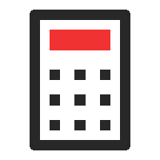
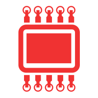
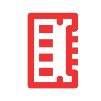

27
H O U R S
09
>
清空回收站
Akame Ga Kill! Akame Ga Kill! Akame Ga Kill! Akame Ga Kill! Akame Ga Kill! Akame Ga
Kill! Akame Ga Kill! Akame Ga Kill! Akame Ga Kill! Akame Ga Kill! Akame Ga Kill! Akame Ga Kill!
SAYURDAY
A U G . 13


00 %
00 %
Scarlet


F I G H T
攀登顶峰 , 这种奋斗的本
身就足以充实人的心 . 人
们必须相信 , 垒山不止就
是幸福 .
Common
F O L D E R
♥